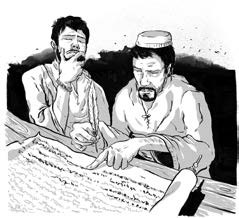
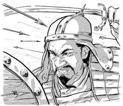
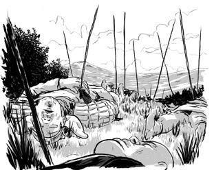
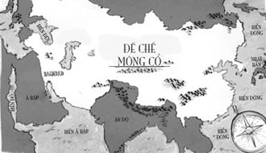
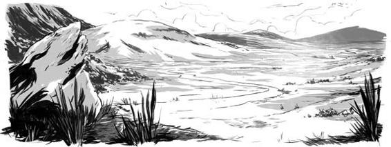
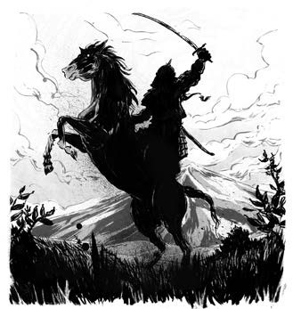
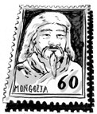

TÂM LÝ CHIẾN
TẠI THỜI ĐIỂM NGƯỜI MÔNG CỔ XÂM LĂNG, NHỮNG NGƯỜI HỒI GIÁO NƯỚC HOA LẠT TỬ MÔ LÀ NHỮNG NGƯỜI GIÀU CÓ VÀ TIẾN BỘ BẬC NHẤT THẾ GIỚI. HỌ NGHIÊN CỨU THIÊN VĂN, TOÁN HỌC VÀ CÓ HỌC VẤN CAO.
THÀNH CÁT TƯ HÃN ĐÃ TẬN DỤNG ĐƯỢC ĐIỀU NÀY. ÔNG ĐÃ CHO GHI LẠI NHỮNG CÂU CHUYỆN VỀ MÔNG CỔ OAI HÙNG VÀ NHỮNG CUỘC TẤN CÔNG ÁC LIỆT.


TRONG CÁC BẢN GHI CHÉP LẠI, BẠO LỰC ĐƯỢC CƯỜNG ĐIỆU. NHỮNG CÂU CHUYỆN HAY CÒN ĐƯỢC BIẾT ĐẾN LÀ TÀI LIỆU TÂM LÝ CHIẾN, ĐƯỢC LAN TỎA KHẮP HOA LẠT TỬ MÔ, THẬM CHÍ CÒN LAN TỚI CẢ CHÂU ÂU.
THÀNH CÁT TƯ HÃN ĐỦ THÔNG MINH ĐỂ REO RẮC NỖI SỢ HÃI TỚI NHỮNG QUỐC GIA MÀ ÔNG CHƯA CHINH PHỤC. ÔNG SỬ DỤNG CÂU CHUYỆN NÀY, HAY CỤ THỂ LÀ UY DANH CỦA ÔNG NHƯ MỘT VỊ LÃNH CHÚA ĐÁNG SỢ, ĐỂ THỰC HIỆN NHỮNG ĐIỀU MÌNH MUỐN. THÀNH CÁT TƯ HÃN LUÔN MUỐN CÁC THÀNH PHỐ PHẢI TỰ ĐẦU HÀNG TRƯỚC KHI ÔNG TẤN CÔNG.
Người Mông Cổ muốn đưa Thành Cát Tư Hãn an nghỉ tại một nơi bí mật. Theo như truyền thuyết, những người chứng kiến đám tang bốn mươi ngày của ông sẽ phải chết. Sau khi chôn cất ông, tám trăm kỵ sĩ đã san phẳng vùng đất phía trên mộ, để không ai biết nơi ông được chôn cất. Truyện kể lại rằng những kỵ sĩ đã bị giết, và chính những người giết cũng đã tự sát.

.
/Trong năm mươi năm, các con cháu của Thành Cát Tư Hãn đã mở rộng lãnh thổ đế chế Mông Cổ. Vào thời huy hoàng, đế chế này có diện tích gần bằng một phần tư diện tích đất liền trên thế giới. Vó ngựa Mông Cổ từng ba lần tấn công Đại Việt vào thế kỷ 13 nhưng thất bại. Các đội quân đã chinh phạt Baghdad, thành phố rộng lớn và giàu có nhất của người Hồi giáo, tiếp sau đó là Syria và Thổ Nhĩ Kỳ. Họ phi ngựa tới vùng đồng bằng Á - Âu ở Nga, Ukraine và Hungary. Các hiệp sĩ châu Âu, trong bộ giáp sắt nặng nề, không phải là đối thủ của đội quân Mông Cổ can đảm và nhanh như gió bão.
VÙNG ĐẤT CẤM
KHU VỰC 150 DẶM VUÔNG XUNG QUANH NƠI CHÔN CẤT THÀNH CÁT TƯ HÃN ĐƯỢC CÁCH LY VỚI NGƯỜI NGOÀI TRONG GẦN TÁM TRĂM NĂM. NHỮNG NGƯỜI LÍNH TINH NHUỆ ĐƯỢC CỬ CANH GÁC KHU VỰC NÀY, CHỈ CHO PHÉP HẬU DUỆ CỦA THÀNH CÁT TƯ HÃN ĐI VÀO - VÀ CHỈ DUY NHẤT TRONG TANG LỄ. KHU VỰC NÀY ĐƯỢC BIẾT ĐẾN VỚI CÁI TÊN IKH KHORIG, HAY CÒN GỌI LÀ VÙNG ĐẤT CẤM.

KHI MÔNG CỔ ĐẶT DƯỚI QUYỀN KIỂM SOÁT CỦA LIÊN XÔ NĂM 1924, CHÍNH PHỦ LIÊN XÔ ĐÃ THAY THẾ NHỮNG NGƯỜI LÍNH GÁC MÔNG CỔ BẰNG NHỮNG CHIẾC XE TĂNG.
HỌ KHÔNG MUỐN PHẦN MỘ CỦA THÀNH CÁT TƯ HÃN TRỞ THÀNH NƠI NGƯỜI MÔNG CỔ TỤ TẬP, VÀ HỌ ĐỔI THÀNH MỘT CÁI TÊN ĐƠN GIẢN “KHU VỰC HẠN CHẾ”. SAU ĐÓ, HỌ BAO QUANH BẰNG MỘT TẤM BIỂN LỚN ĐỀ “KHU VỰC HẠN CHẾ”. CÁC CON ĐƯỜNG ĐƯỢC XÂY DỰNG TỚI KHU VỰC NÀY, NHƯNG KHÔNG BAO GIỜ VƯỢT QUA RANH GIỚI CỦA NÓ.
MÃI TỚI NĂM 1989, CÁC NHÀ KHẢO CỔ VÀ NGƯỜI NGOÀI MỚI ĐƯỢC PHÉP VÀO VÙNG ĐẤT CẤM NÀY.
Thành Cát Tư Hãn và những người nối ngôi ông đã sát hại hàng triệu người vô tội, phá hủy các thành phố và biến ruộng vườn trù phú hóa đồng hoang. Nhưng dưới sự cai trị của họ, những sáng kiến và công nghệ từ mọi nơi trên thế giới đã được tự do chia sẻ. Đường, cầu, và mười nghìn trường học được xây dựng. Sản xuất và thương mại hưng thịnh. Các sứ thần Mông Cổ đã đi xa tới Pháp và Anh. Các giáo sĩ của nhiều tôn giáo trên thế giới đã được mời đến để tranh luận trước triều thần Mông Cổ.
Ngày nay, người Mông Cổ tôn thờ Thành Cát Tư Hãn như một người lãnh đạo lỗi lạc. Ông được coi là người cha của dân tộc. Chính ông đã chấm dứt những cuộc nội chiến liên miên và đem lại hòa bình thịnh vượng cho vùng thảo nguyên khắc nghiệt và cô lập. Hình ảnh của ông xuất hiện trên tem, tiền và cả trên những thanh sôcôla.


Dù cho khu mộ ông vẫn là điều bí ẩn, nhiều người tin rằng Thành Cát Tư Hãn đang an nghỉ tại nơi mà ông có thể quỳ trước Trời Xanh Vĩnh Cửu, phía trên thảo nguyên, trên đỉnh ngọn núi thiêng Burkhan Khaldun.
NHỮNG DẤU MỐC TRONG CUỘC ĐỜI THÀNH CÁT TƯ HÃN
1162 - Sinh ra trên ngọn đồi cạnh sông Onon
1171 - Cha bị người Thát Đát đầu độc và qua đời; gia đình bị bộ tộc bỏ rơi
1173 - Trở thành anh em kết nghĩa với Trát Mộc Hợp
1175 - Giết Bột Khắc Thiếp Nhi, anh trai cùng cha khác mẹ, sau đó bị bộ tộc cũ bắt giữ.
1178 - Cưới Bột Nhi Thiếp và kết đồng minh với tộc trưởng tộc Khắc Liệt, Thoát Lý.
1179 - Bột Nhi Thiếp bị người Miệt Nhi Khất bắt và được Thiết Mộc Chân, Trát Mộc Hợp và Thoát Lý giải cứu. Gia nhập bộ tộc của Trát Mộc Hợp. Sinh con đầu lòng, Truật Xích.
1181 - Rời bộ tộc của Trát Mộc Hợp
1189 - Tự xưng tộc trưởng Mông Cổ tại hồ Thanh Hải
1190 - Trận chiến đầu tiên chống lại Trát Mộc Hợp
1195 - Đột kích người Thát Đát
1197 - Dựng quê hương mới Aurag cho người của mình.
1201 - Chiến đấu với Trát Mộc Hợp lần hai, với sự giúp đỡ của Thoát Lý.
1202 - Chinh phục người Thát Đát, tổ chức lại quân đội.
1204 - Đánh bại Trát Mộc Hợp
1206 - Xưng danh Thành Cát Tư Hãn, lập ra Đế quốc Mông Cổ
1211 - Tấn công người Nữ Chân phía bắc Trung Hoa
1219 - Người con thứ ba, Ô Hợp Đài, lên nối ngôi
1220 - Chinh phạt nước Hoa Lạt Tử Mô
1227 - Qua đời trong chiến dịch ở phía tây bắc Trung Hoa
NHỮNG DẤU MỐC LỊCH SỬ THẾ GIỚI
Vua Suryavarman II, người xây dựng đền Angkor Wat ở Campuchia qua đời - 1150
Henry II trở thành vua của nước Anh - 1154
Người Tống phía nam Trung Hoa đánh bại hải quân của người Nữ Chân ở phía bắc - 1161
Công trình xây dựng nhà thờ Đức Bà được khởi công ở Paris - 1163
Thomas Becket, Tổng giám mục thành phố Canterbury bị ám sát - 1170
Công trình tháp Pisa được khởi công - 1173
Tháp Pisa bắt đầu bị nghiêng - 1178
Chiến tranh Genpei tại Nhật Bản diễn ra giữa hai bộ tộc đối đầu Taira và Minamoto - 1180
Thánh Francis của Assisi ra đời - 1181
Các nhà lãnh đạo Châu Âu khởi động các cuộc thập tự chinh thứ ba để chiếm lại đất thánh từ người Hồi giáo - 1189
Các chữ số Ả Rập được biết đến tại Châu Âu - 1202
Dunama Dabbalemi trở thành vua của đế chế Kanem, nay là Cộng hòa Chad (Trung Phi) - 1203
Constantinople, kinh đô của đế quốc Byzantine, bị chiếm trong cuộc thập tự chinh thứ tư - 1204
Đại học Cambridge được thành lập - 1209
Vua John của nước Anh ký kết Đại Hiến Chương (Magna Carta) - 1215
Cuộc thập tự chinh thứ năm bắt đầu - 1217